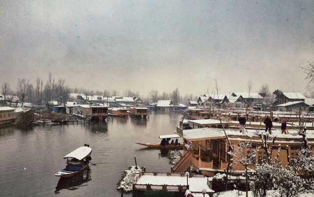
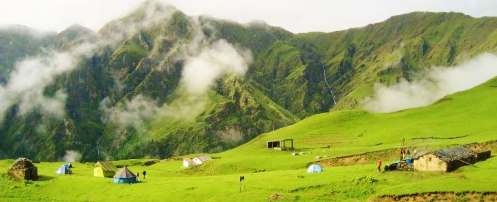

|
|
|
Jammu and Kashmir |
The location of Jammu and Kashmir marks the northern most region of India and rightly signifies as the Crown of India! The snow capped mountains, chilli weather, mesmerizing scenes, beautiful people and a place that will leave you overwhelming!
Srinagar, the summer capital of Jammu Kashmir is famous for beautiful floating houseboats. The valley of Kashmir, The Dal Lake, The Mughal Gardens and “The Temple of Shankaracharya” are the main attractions in Srinagar you should visit.

Leh, Jammu and Ladakh collectively offers the most wonderful places in India. Dha-Hanu, Nubra Valley, Zanskar, Central Ladhak, Changthang Area, Pangong Tso and Suru Valley are some of the best places to visit in Ladakh. The Raghunath Mandir, Dargah of Peer Budhan Ali Shah and Bawey Wali Mata or Mahamaya temple are some of the places will give you the glimpses of divinity in this part of North India.
|
|
Himachal Pradesh |
Trekking, mountaineering, paragliding, fishing, ice-skating, skiing and golfing are the popular things to do in Himachal Pradesh.
Shimla is the capital city of Himachal Pradesh. It is situated in the middle Himalayas in Northern India. The best of all the attractions in the city Kullu Manali is a picturesque hill station and a wonderful include State Museum, Sankat Mochan temple, Tara Devi, Mashobra, place for nature lovers. The famous spots here are Rohtang Pass, Jagatsukh, Vashisht Ashram and Gayatri Devi and Devi Sharvali Kothi.
Dalhausi, Dharamsala and Kangra are two more famous tourist destinations in Himachal Pradesh.

hills – you will love Himachal Pradesh..... |
|
Uttaranchal |
Dehradun is the capital city of Uttaranchal and is the home of the Indian military Academy. Durbar Shri Guru Ram Rai, Robber’s cave, Malsi deer Park, Lakshmansidh, Forest Research Institute and The Sericulture Centre are the places to visit in Dehradun.

Great stupa in Mindroling
Badrinath, Kedarnath, Shivpuri, Gangotri, Rishikesh and Haridwar are the major Hindu pilgrimage centres in India (Char Dham). These places are the most sought out temples in India.
Mussorie and Nainital are fascinating hill stations famous places amongst honeymooners in India. Corbett and Auli are other places that may interest you. |
|
Uttar Pradesh |
Uttar Pradesh is a world in itself says Ruskin Bond. It is one of the most diverse states in India. It has something to offer to every tourist ranging from adventures to spiritual culture or heritage sites.
Lucknow is the capital city of Uttar Pradesh. It has been significant for the royal romance of Nawabs. Bara Imambara, Jama Masjid and Clock Tower are a few important sites to see in Lucknow.
Agra is the most important place to be visited in India and this city is in Uttar Pradesh. Taj Mahal is one of the wonders of the world built with white marble and is the mausoleum of Shah Jahan’s wife, Mumtaz Mahal. Agra fort, Fatehpur Sikri, Jama Masjid and Chini Ka Rauza are few more sites to visit in Agra.

friend Natalia at the Taj Mahal
Varanasi, Vrindavan, Mathura and Ayodhya are prominent Hindu pilgrims centres. Apart from these you may also visit cities like Gorakhpur, Kanpur, Allahabad, Shravasti and Kushinagar. Here’s a list of top Hindu places to visit.

Sadhus or holy men of India at the holy city of Varanasi. Source: plusgood’s photostream.
The climate in North India is different in different places. Do not forget to get some information on weather when you plan for your trip to North India.
Now there are no excuses not to visit the best tourist places in North India… |
| |